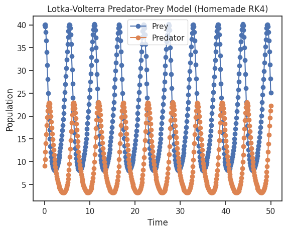
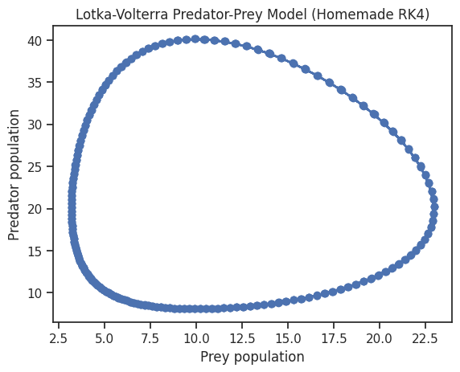
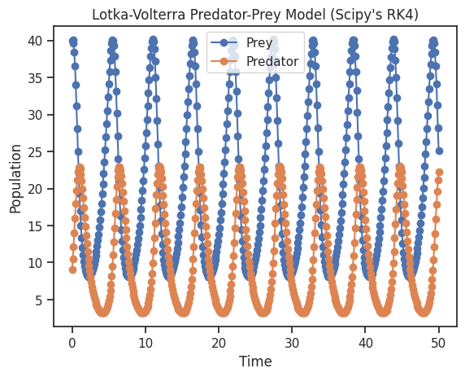
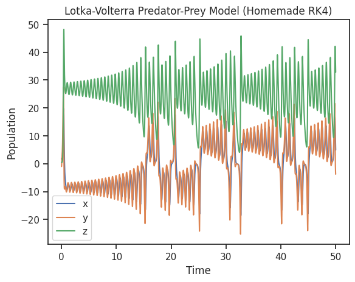
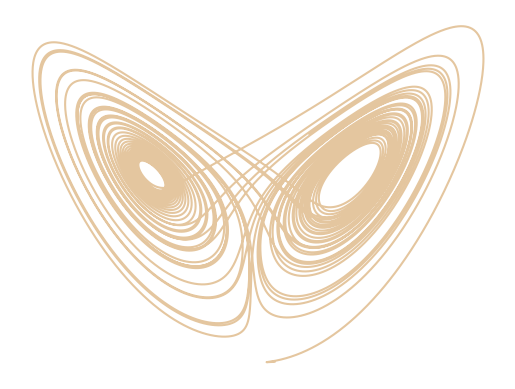

Simulations numériques#
# import useful python packages
import numpy as np # for vector and matrix manipulations
import matplotlib.pyplot as plt # for plotting
import seaborn as sb # for plotting nicer
sb.set_theme(context="notebook", style="ticks")
def rk4_solver(fun, t_end, y0, h=0.1):
"""
Custom Runge-Kutta 4th order solver for ODEs (similar to `solve_ivp` interface).
Parameters
----------
fun : callable
The system of differential equations to solve. It must have the signature `fun(t, y)`,
where `t` is a scalar and `y` is an array-like object representing the state vector.
t_span : 2-tuple of floats
The time interval over which to integrate. Must be of the form (t0, tf).
y0 : array-like
Initial state vector.
h : float, optional
Fixed step size (default is 0.1).
Returns
-------
OdeResult : dict
A dictionary with two keys:
- `t`: Array of time points where the solution was evaluated.
- `y`: 2D array where each row is the solution vector at a corresponding time.
Notes
-----
This is a fixed-step RK4 implementation, so the accuracy depends on the step size `h`.
For adaptive step size control, use solvers like `RK45` in SciPy.
"""
# Initialize time and solution arrays
t_values = np.arange(0, t_end + h, h)
y_values = np.zeros((len(t_values), len(y0)))
y_values[0] = y0
y = y0
t = 0
for i in range(1, len(t_values)):
# RK4 steps
k1 = h * fun(t, y)
k2 = h * fun(t + 0.5 * h, y + 0.5 * k1)
k3 = h * fun(t + 0.5 * h, y + 0.5 * k2)
k4 = h * fun(t + h, y + k3)
# Update state vector
y = y + (k1 + 2 * k2 + 2 * k3 + k4) / 6.0
# Update time
t = t_values[i]
y_values[i] = y
return {'t': t_values, 'y': y_values.T} # Transpose `y_values` to match SciPy format
def lotka_volterra(t, y):
"""
Lotka-Volterra predator-prey model.
Parameters
----------
t : float
Time variable.
y : array-like
State vector where y[0] is the prey population and y[1] is the predator population.
Returns
-------
dydt : ndarray
Array of the derivatives [dprey/dt, dpredator/dt].
"""
alpha = 1.0 # Prey birth rate
beta = 0.1 # Predation rate
delta = 0.075 # Predator reproduction rate
gamma = 1.5 # Predator death rate
prey = y[0]
predator = y[1]
dprey_dt = alpha * prey - beta * prey * predator
dpredator_dt = delta * prey * predator - gamma * predator
return np.array([dprey_dt, dpredator_dt])
Simulate#
# system parameters
y0 = np.array([40, 9]) # Initial prey and predator populations
# integration parameters
t_end = 50 # End time
h = 0.1 # Step size
# Numerically integrate the system using the custom RK4 solver
solution = rk4_solver(lotka_volterra, t_end, y0, h=h)
# Extract the results
t_values = solution['t']
prey_population = solution['y'][0, :] # First row: prey
predator_population = solution['y'][1, :] # Second row: predator
# Create a figure and axis object
fig, ax = plt.subplots()
# Plot the results
ax.plot(t_values, prey_population, "o-", label="Prey")
ax.plot(t_values, predator_population, "o-", label="Predator")
# Set labels and title
ax.set_xlabel('Time')
ax.set_ylabel('Population')
ax.set_title('Lotka-Volterra Predator-Prey Model (Homemade RK4)')
# Add a legend
ax.legend()
# Show the plot
plt.show()

# Create a figure and axis object
fig, ax = plt.subplots()
# Plot the results
ax.plot(predator_population, prey_population, "o-")
# Set labels and title
ax.set_xlabel('Prey population')
ax.set_ylabel('Predator population')
ax.set_title('Lotka-Volterra Predator-Prey Model (Homemade RK4)')
# Show the plot
plt.show()

Use SciPy’s function#
Find mode information about Scipy’s solve_ivp in the documentation.
from scipy.integrate import solve_ivp
t_span = (0, t_end)
t_eval = np.arange(0, t_end + h, h)
solution = solve_ivp(lotka_volterra, t_span, y0, method='RK45', t_eval=t_eval)
# Create a figure and axis object
fig, ax = plt.subplots()
# Plot the results
ax.plot(t_values, prey_population, "o-", label="Prey")
ax.plot(t_values, predator_population, "o-", label="Predator")
# Set labels and title
ax.set_xlabel('Time')
ax.set_ylabel('Population')
ax.set_title("Lotka-Volterra Predator-Prey Model (Scipy's RK4)")
# Add a legend
ax.legend()
# Show the plot
plt.show()

def lorenz(t, y, sigma=10.0, beta=8.0/3.0, rho=28.0):
"""
Lorenz system of differential equations.
Parameters
----------
t : float
Time variable.
y : array-like
State vector [x, y, z].
sigma : float, optional
Prandtl number, default is 10.0.
beta : float, optional
Geometric factor, default is 8/3.
rho : float, optional
Rayleigh number, default is 28.0.
Returns
-------
dydt : ndarray
Derivatives [dx/dt, dy/dt, dz/dt].
"""
x, y, z = y
dx_dt = sigma * (y - x)
dy_dt = x * (rho - z) - y
dz_dt = x * y - beta * z
return np.array([dx_dt, dy_dt, dz_dt])
# system parameters
y0 = np.array([2, -1, 0.5]) # Initial prey and predator populations
# integration parameters
t_end = 50 # End time
h = 0.001 # Step size
# Numerically integrate the system using the custom RK4 solver
solution = rk4_solver(lorenz, t_end, y0, h=h)
# Extract the results
t_values = solution['t']
x = solution['y'][0, :] # First row: prey
y = solution['y'][1, :] # Second row: predator
z = solution['y'][2, :] # Second row: predator
# Create a figure and axis object
fig, ax = plt.subplots()
# Plot the results
ax.plot(t_values, x, "-", label="x")
ax.plot(t_values, y, "-", label="y")
ax.plot(t_values, z, "-", label="z")
# Set labels and title
ax.set_xlabel('Time')
ax.set_ylabel('Population')
ax.set_title('Lotka-Volterra Predator-Prey Model (Homemade RK4)')
# Add a legend
ax.legend()
# Show the plot
plt.show()

# Create a figure and axis object
fig, ax = plt.subplots()
# Plot the results
ax.plot(x, z, "-", c="burlywood", alpha=0.8)
sb.despine(left=True, bottom=True)
ax.set_xticks([])
ax.set_yticks([])
# Show the plot
plt.savefig("lorenz_attractor.png", dpi=250)
plt.show()
